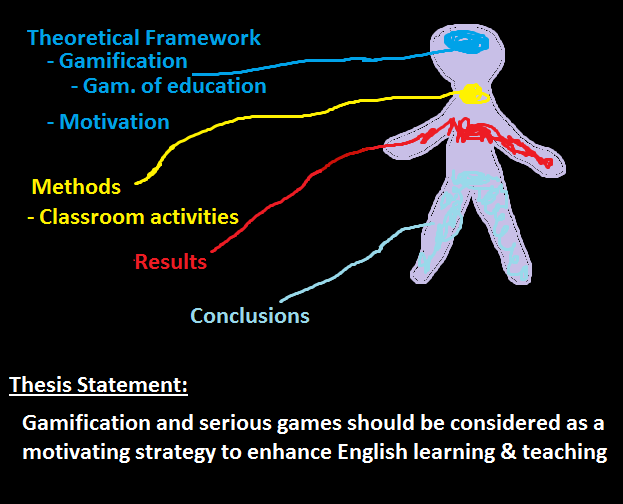

Article outline
Annotated Bibliography
Table of Contents
- Introduction
- A Practitioner's Guide To Gamification of Education (Hsin et al)
- Gamificar el aula de español (Herrera)
- Gamification in Education: What, How, Why Bother (Lee & Hammer)
- No Pain, no Gain? Investigating Motivational Mechanisms of Game Elements in Cognitive Tasks (Bernecker & Nisaus)
- Educational Gamification Vs. Game Based Learning: Comparative Study (R. Al Azawi et al)
- Game On! Perceptions of Gamified Learning (Buckley et al)
- Experiencias de Gamificacion en las Aulas (Contreras & Eguia)
- The Shift to Gamification in Education: A Review on Dominant Issues
- Does educational gamification improve students’ motivation? If so, which game elements work best? (Chapman & Rich)
- Peer co-authorship declaration
- Academic integrity declaration
Introduction
The present document is a collection of sources related to gamification and its impact on education. Owing to the dearth of sources in the databases of the Universidad de Concepcion’s digital library, other academic tools were consulted, such as ScienceDirect, SAGE Journals, and JSTOR. The strategy used was to select documents that provided theoretical insights and experimental studies regarding motivation linked to the use of gamification in the educational field.
A Practitioner's Guide To Gamification of Education (Hsin et al)
The main objective of this research is to define the concept of gamification and explain how to effectively implement it in education by following a five-step process, which is demonstrated through five study cases. Finally, the authors conclude that gamification of education may be a great strategy provided a correct implementation, following some crucial concepts. Thus, learning objectives can be met in lower amounts of time compared to traditional methods. The importance of motivation in the learning process is strongly emphasized.
This article is the result of a systematic revision. Thus, it provides important theoretical data of the concept of gamification and establishes a relation with the pedagogical work. Furthermore, the language used to explain the five steps of the process correspond to educational jargon.
This article results quite suitable for the present research since it offers a definition of gamification and assesses the implementation of this technique in different educational contexts. Also provides well-structured plans of feasible implementation. This research will guide the project because it provides the theoretical root for the final result.
Gamify the Spanish Classroom [Original Title: Gamificar el Aula de Español] (Herrera)
In this e-book, the author discusses a wide variety of topics related to the gamification of education, namely: general comments on the relation playing/learning, myths about games and learning, reasons to gamify the learning process, indications to implement games/gamification in the classroom, and differences between serious games and gamification. It also includes a section with references to further related research and a description for each of them.
The present work is a systematic revision of the academic literature regarding gamification combined with reflections and suggestions of the author. It is suitable both as support for the theoretical framework and the experimental designs. A limitation of this e-book is that it is focused on Spanish learning instead of English.
For all the previously stated, this document serves as a fine source of information about key concepts related to the gamification of education. Also, it describes the implementation of the aforementioned techniques in the classroom, and about other works of the field, which can result useful for future gamified class designs.
Gamification in Education: What, How, Why Bother (Lee & Hammer)
In a context of a society increasingly reliant on electronic devices and the Internet, the authors aim to explain, through a systematic revision, the usefulness of gamification in schools, as a way of approaching the everlasting issue of students’ engagement and motivation. They start posing a definition of gamification of education, and in which ways it may improve students’ school experience. Then, the authors talk about goals and techniques to implement in the classroom which, according to their approach, can impact three areas, namely: cognitive, emotional, and social. Finally, they discuss the benefits this technique can offer but also the risks that a wrong implementation can report.
This article is a systematic revision of the academic literature related to the gamification of education available up to the year 2011. It also presents an unbiased insight on gamification of education by including both its benefits and drawbacks. The theory exposed here can be compared with that of newer works.
Although short, this paper provides accurate definitions, well-supported implementation suggestions, and warns. Indeed, it can be easily related to similar works employing contrast or comparison. Since this paper includes a consistent theoretical background regarding education, we can consider it as a key source for the research theoretical framework.
No Pain, no Gain? Investigating Motivational Mechanisms of Game Elements in Cognitive Tasks (Bernecker & Nisaus)
This research study focuses on the influence of game elements on learning and performance in cognitive tasks. The article questions, through two studies, the view that a total of 146 participants performed gamified and non-gamified activities (control group). The evidence indicates that the integration of game elements into cognitive tasks prevents task disengagement, but it does not necessarily improve task performance. For this reason, people can be motivated to stay engaged by using game elements in cognitive tasks.
The evidence provided is effective for the present research because it reflects the main idea, which is gamification's influence on motivation and engagement in the classroom. This article was taken from ScienceDirect and describes objectively the methods of the two studies; therefore, it offers reliability to the readers who are interested in this field. The limitations are that the research presented quasi-experimental results, so it has not been in a natural setting.
The final thought on this paper is that it results suitable for the research since it provides useful procedures to assess gamified settings and results obtained from previous studies. Although it presents quasi-experimental results, it can be compared with other experimental or quasi-experimental cases.
Educational Gamification Vs. Game Based Learning: Comparative Study (R. Al Azawi et al)
This study provides an overview of the difference between gamification and game-based learning (GBL). The authors define the terms targeted in the study in order to compare and analyze them in many compromising categories, i.e. concept and objective, through a systematic revision. In conclusion, both approaches, gamification, and game-based learning pursue the same goal which is to enhance the learning process.
This paper consists of a systematic revision of the academic literature about gamification. Regarding the sources, 30 references have been included in the revision. The limitations present in this study is that there are no concrete results between people using gamification and GBL.
The information provided is useful in addressing two similar terms, which are crucial for understanding the general topic, avoiding the confusion between them at the moment of analyzing models present in other works. Considering these facts, this article becomes effective for elaborating the theoretical framework of the coming research project.
Game On! Perceptions of Gamified Learning (Buckley et al)
The purpose of the article is to show a study on the perceptions of a gamified learning through interventions deployed in two university modules in Ireland. The authors focus on an explanatory approach to collect the information; therefore, the study resides in students’ perspective towards a gamified learning environment. The results suggest that the effectiveness in motivation and engagement may change depending on several factors, i.e. class size, level of education, and learning style; however, the method improved outcomes for all learners.
This study was taken from JSTOR, which provides reliability to the final project. The authors tested two different class sizes of a business university program: the first group of 142 undergraduate students, and the second group of 19 postgraduates. The limitation of this research is that the nature of gamification is to compete, which means that the participants’ motivation tended to decrease if they did not have a specific feedback.
The present article can add empirical information to the results section of the research regarding gamification applied in education and the perception of the users (students). Consequently, this document would contribute to the results’ section of the future project.
From Storytelling to Storylearning: How to Motivate Multimedia Design Students [Original Title: Del Storytelling al Storylearning. Cómo Motivar a los Alumnos de Guión y Diseño Multimedia] (Leguerén)
In this document, the author explains how to design and implement university courses by using principles of gamification of education. Specifically, she narrates the experience of implementing techniques of storytelling in the teaching of classes such as the design and development of video games, design, and management of audiovisual and interactive projects, etc. Although the methodical explanations, the writer highlights the importance of fun and motivation in the learning process.
This document is part of a journal related to the enhancement of the use of gamification in education. It poses a model to measure the performance of students experiencing this modality. Nonetheless, the theoretical background of this paper does not approach directly the issues of language learning and teaching.
Despite this field differs from English education, the core elements of the method presented are easily adaptive to some, yet very widespread, approaches of English teaching. This source would serve in the methodology section to design gamified activities to enhance English language learning and motivation.
The Shift to Gamification in Education: A Review on Dominant Issues (Ofosu-Ampong)
This research paper analyzes 32 articles related to gamification in education from 2011 to 2018. The research question in this review is how learning has been performed in the development, application, and impact of gamification in education. Findings in this study evaluate the dominant issues to generate knowledge on the study of gamification in education has progressed in the gamified learning environments. Overall, it suggests some design guidelines for future gamified systems.
Having considered all these elements, this article is a systematic revision because it has collected data from almost a decade; it leads to analyze the evolution of the gamification concept. This research was taken from SAGE Journals and it demonstrates objectivity regarding writing. The methodology used was evaluating and identifying previous conceptual and methodological approaches in educational gamification research. The limitations are that there are missing theories in the study because they are focused on industry.
Since this research analyzes the development, application, and impact of gamification in education through the years, it will provide crucial information for the development of both the theoretical framework and the methodological review. For instance, how gamification has influenced students and how will be doing it with further research.
Does educational gamification improve students’ motivation? If so, which game elements work best? (Chapman & Rich)
The main point of this study is to demonstrate how the implementation of gamification to a university business course may increase motivation in students. The research questions are based on students’ perceived motivation towards gamification and specific game elements, their impact, and their benefits and limitations. This study was conducted by using an empirical collecting data mechanism on 124 university students. The results report that 67,7% of participants indicate that the gamified course is more motivating than a traditional course.
The article was found by browsing in Universidad de Concepción library databases. It describes the implementation of a quasi-experimental design which is the only representative of the population that participated in it. Nonetheless, in comparison with the other resources included in the final project, it demonstrates a tendency to business rather than education itself.
Although the study took a part in an undergraduate business course, there are core elements that can be adapted and included in the gamification of education research. Trying these new methodologies would increase motivation in the context of English teaching and learning, so the information presented here would serve as theoretical support as well as pragmatic indications.
Peer co-authorship declaration
As a group, we, Damaris Araya, Catalina Flores and Rodrigo Muñoz, have taken turns to prepare entries' drafts, review them, and edit them. Consequently, we took as much time as we could to achieve a well-developed work.
Academic integrity declaration
We, Damaris Araya, Catalina Flores and Rodrigo Muñoz, have been honest and have done our work. We have not plagiarized other people's words. We have used APA style format in the citation.